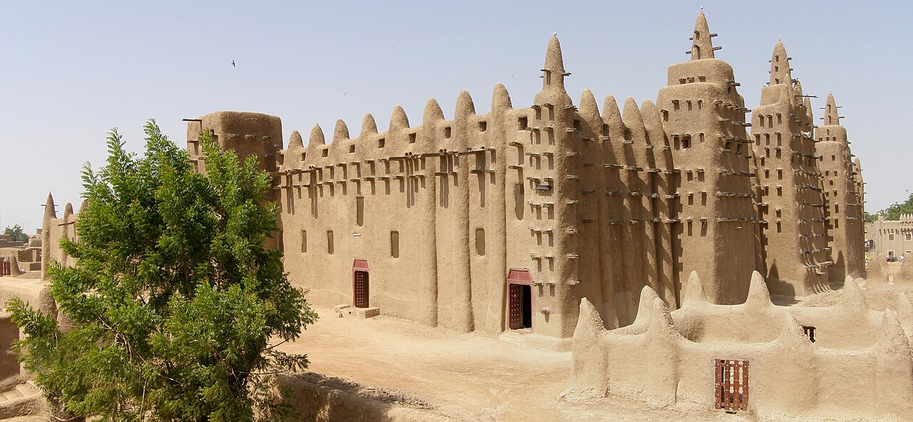

UNESCO WHC · Old Towns of Djenné & Jenné-jeno ↗
Property boundaries uniting Old Towns of Djenné with the surrounding tells including Jenné-jeno.
Deep dives / Africa & Middle East
For generations historians assumed that cities south of the Sahara emerged only after Arab merchants reached the Niger Bend. Excavations beginning at Jenné-jeno in 1977 overturned that picture, uncovering an entire urban civilization thriving on the Inland Niger Delta floodplain a thousand years earlier.
Archaeological sequences across Jenné-jeno, Dia Shoma, Sadia, Bandiagara/Ounjougou, and historical Jenné from Early Holocene wetlands through c. 1900 CE.

Modern Inland Niger Delta and Bandiagara plateau locality anchors. River channels shift seasonally; points mark archaeological research areas, not ancient city limits.
c. 250 BCE–1400 CE
Main 33-hectare flood-plain mound and surrounding craft satellites built by iron-using African rice farmers, herders, and fishers. [1] [2] [3] [10] [11]
13.89°, -4.54°c. 1250–1900 CE
Eight metres of stratified mud-brick town walls showing demographic overlap and shift from Jenné-jeno into Islamic Jenné. [5]
13.91°, -4.55°First millennium BCE–medieval era
Western delta mound complex uniting early Tichitt-heritage rice farming with medieval burial and trade phases. [6] [7]
14.12°, -5.32°Before 9400 cal BCE–Holocene
Upland eastern margin preserving some of Africa’s oldest ceramics and long environmental sequences. [8]
14.43°, -3.53°First–mid-second millennium CE
Mound complex documenting sorghum, pearl millet, and fonio diversification in the delta’s southeastern hinterland. [9]
14.37°, -3.25°Beginning in the third century BCE atop dry levees above annual Niger floods, early settlers at Jenné-jeno fished, herded cattle, smelted iron, and cultivated domesticated African rice (Oryza glaberrima). Rather than condensing into one walled palace city, habitation expanded outward into over sixty clustered mounds within a 4-kilometre radius. [1] [4]
Archaeologists Susan and Roderick McIntosh interpreted this clustered morphology—lacking monumental royal palaces, temple pyramids, or elite tombs despite surrounding mud-brick city walls built around 850 CE—as a "heterarchical" city organized among cooperative guilds of smiths, potters, herders, fishers, and farmers. [4] [3]
| Phase / Locality | Chronology | Key Archaeological Evidence | Sources |
|---|---|---|---|
| Ounjougou Ravin de la Mouche | Before 9400 cal BCE | Early Holocene grass-savanna ceramics and microliths | [8] |
| Dia (Horizons I–V) | c. 800 BCE–1600 CE | Tichitt-related ceramics, domesticated African rice, medieval burials | [6] [7] |
| Jenné-jeno Phases I–III | c. 250 BCE–900 CE | Iron smelting, tauf mud architecture, copper imports, 3.3 m town wall | [2] [1] |
| Jenné-jeno Phase IV & Old Jenné | c. 900–1400 CE -> modern Jenné | Cluster peak, terracotta art, transition to Islamic market city | [5] [12] |
Zooarchaeological and archaeobotanical analyses across Jenné-jeno, Dia, and Sadia reveal deliberate risk-buffering across distinct flooding zones: floodwater African rice was balanced with upland pearl millet, fonio, dry-season grazing, and migratory fish catches. [3] [9]
Recent publication of the 1999 Museum excavations inside modern Jenné demonstrates that urban occupation on the new mound began by the late thirteenth or fourteenth century CE—overlapping directly with Jenné-jeno’s final Phase IV rather than following a sudden abandonment. [5]
Excavations across 40+ satellite tells clustered within four kilometres of the central 33-hectare Jenné-jeno mound show specialized blacksmithing, potting, pastoral, and wet-rice communities collaborating through shared ritual belts rather than coercive royal palaces or defensive bastions. [1]
Archaeobotanical chaff, flood-recession fauna, and sub-Saharan copper–glass beads confirm that mid-first-millennium BCE–1st-millennium CE subsistence resilience and Niger Bend river transport predated trans-Saharan camel caravans by centuries. [2]
Seasonal Bani–Niger inundation shaped ancient mud-brick foundations and now drives collaborative Mud-Brick Plastering Festivals (*Crépissage*) linking historic Jenné’s artisan mason guild with UNESCO heritage protection across the Inland Niger Delta. [10] [1]
Open the source maps for their original detail, legends and dates. Their coverage and reproduction terms belong to the issuing institution.
Property boundaries uniting Old Towns of Djenné with the surrounding tells including Jenné-jeno.
Open this era on global Explore ↗ Open Africa & Middle East atlas ↗ Climate, sea level & ice-sheet context ↗
Sources checked and linked above; geological and historical dating methods follow the primary papers.